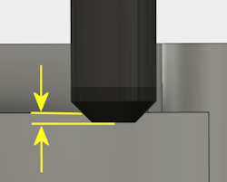

Valeur ajouté à la profondeur de la trajectoire d'outil. L'outil est maintenu en contact avec l'arête sélectionnée en ajustant le décalage radial de la trajectoire d'outil.
 |
Décalage des extrémités de chanfrein |
REMARQUE: permet de couper à partir de la partie inférieure de l'arête de chanfrein. Permet d'éviter de couper avec le bord inférieur de l'outil.